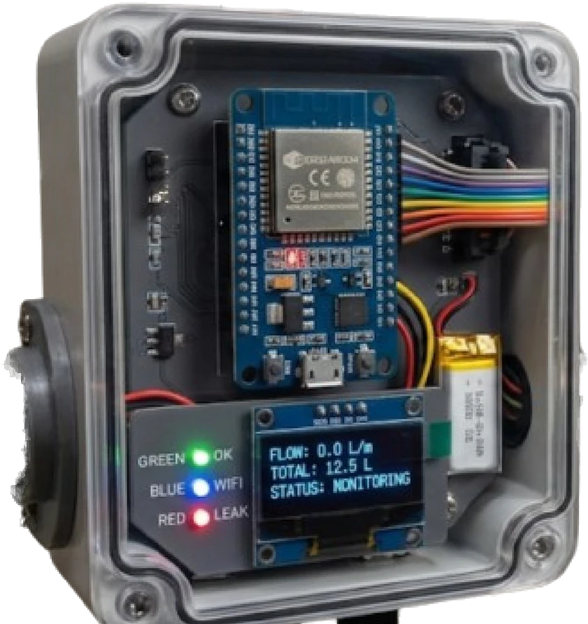
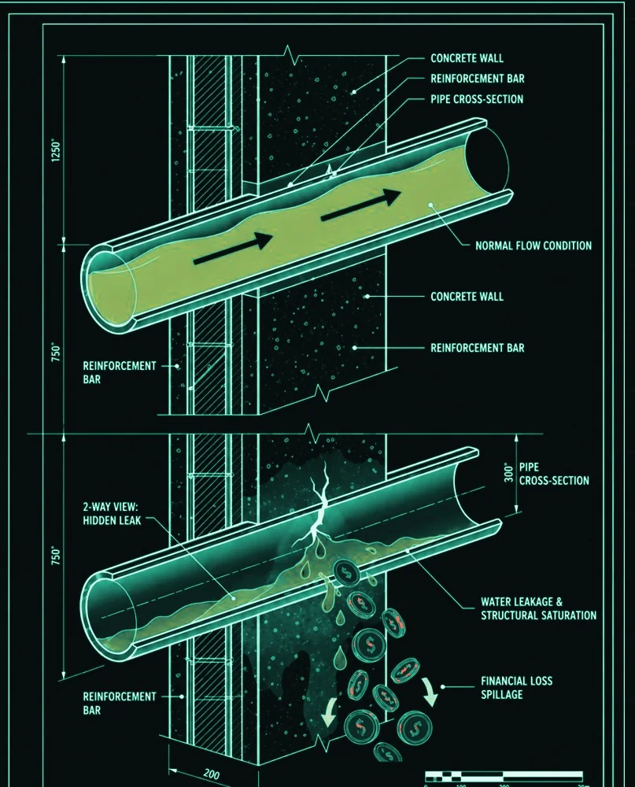
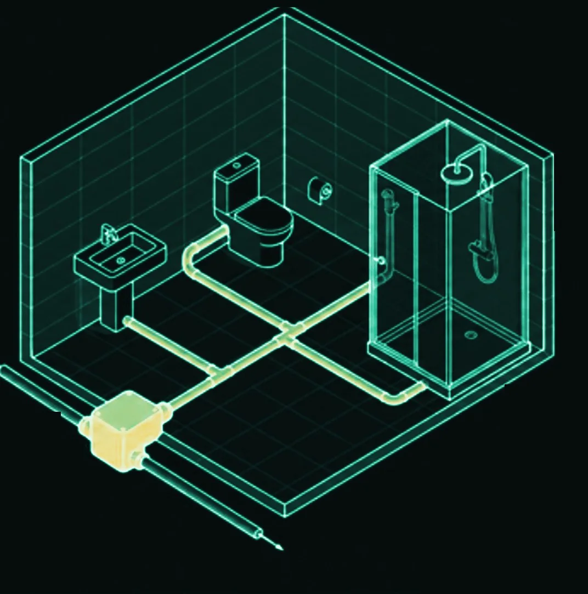

الهدر الخفي وتآكل الخرسانة
تأخر ملحوظ في اكتشاف التسربات الداخلية للمياه داخل الجدران والأرضيات، مما يؤدي إلى تفاقم الأضرار الهيكلية وتآكل حديد التسليح للمنشآت دون علم أصحابها.

يتركّب على الماسورة الرئيسية، ويراقب كل لتر يدخل المبنى.
ويتعلّم النمط الطبيعي لبيتك، فيعرف التسرب قبل ما تعرفه أنت.
نظام ذكي متكامل لمراقبة تدفق المياه، وتحليل أنماط الاستهلاك الاعتيادية عبر معالجة البيانات، واكتشاف التسربات المخفية مبكرًا وإرسال تنبيهات فورية، للمساهمة في حماية البنية التحتية للمنشآت وترشيد الموارد المائية.
«كل قطرة لها قيمة، وكل تسرب له إنذار»
تأخر ملحوظ في اكتشاف التسربات الداخلية للمياه داخل الجدران والأرضيات، مما يؤدي إلى تفاقم الأضرار الهيكلية وتآكل حديد التسليح للمنشآت دون علم أصحابها.
التسريبات غير المكتشفة تؤدي إلى زيادة مفاجئة وغير مبررة في فواتير المياه بنسب تتراوح بين 30% إلى 40% شهرياً تثقل كاهل الأفراد والمؤسسات.
صعوبة التفريق في العدادات الميكانيكية التقليدية بين الاستهلاك البشري الطبيعي وبين التدفق البطيء والمستمر الناتج عن تهريب خفي في شبكة التغذية.

يوضح المخطط الهندسي أن تدفق الماء المستمر داخل الماسورة المحاطة بحديد التسليح والخرسانة المسلحة (Reinforcement Bar & Concrete Wall) ينتج عنه تشبع هيكلي (Structural Saturation) وهدر مالي مستمر يصعب تداركه إلا بنظام رصد مبكر مثل «حارس المياه».
يقدم «حارس المياه» حلاً متكاملاً يجمع بين العتاد الصلب (Hardware) المصمم لتحمل البيئة التشغيلية، وبين خوارزمية ذكية تتعلم عادات استهلاك المنشأة وترصد أي استهلاك غير طبيعي قبل وقوع الكارثة.
قراءة مستمرة لتردد نبضات التوربين النحاسي داخل الماسورة بدقة تصل إلى أجزاء من اللتر لكل دقيقة.
حساب نمط الاستهلاك الطبيعي وساعات السكون الليلي الخاصة بالمنشأة وتحديد خط الأساس المرجعي.
ملاحظة أي زيادة أو تدفق غير مبرر يختلف عن النمط المعتاد (مثل استمرار الجريان لساعات متواصلة).
إرسال إشعارات فورية إلى هاتف المستخدم مع تفعيل صمام الإغلاق الكهروميكانيكي لحماية المكان فوراً.

تسعى رؤية المملكة 2030 عبر محورها المتعلق بالمجتمع الحيوي إلى المحافظة على بيئتنا وترشيد استخدام مواردنا الطبيعية من خلال الاستخدام الأمثل للموارد المائية وترشيد الاستهلاك، ويشكل مشروع حارس المياه رافداً تقنياً محورياً لتحقيق هذه الأهداف بالشراكة مع الأفراد وشركة المياه الوطنية (NWC).
حماية مليارات الأمتار المكعبة سنوياً من الضياع غير المرئي في شبكات التوزيع والتغذية.
منع تصدع الأساسات وتشبع الخرسانة المسلحة بالرطوبة وتآكل الحديد في المباني والمنازل.
خفض تكلفة فواتير المياه الشهرية بنسب تصل إلى 40%، مما يحقق وفراً اقتصادياً مباشراً.
تمكين شركات المياه وإدارات المرافق من مراقبة الأحمال واكتشاف الأعطال مركزياً.
استخدم لوحة التحكم في النصف المجاور لتجربة محاكاة التسرب واختبار استجابة الصمام والشاشة.
كل لون في المجسّم يطابق لونه هنا. قرّب الجهاز لتقرأ اسم كل منفذ على اللوحة.
رصد مستشعر حارس المياه تدفقاً مستمراً بمعدل 7.6 لتر/دقيقة تجاوز 45 دقيقة بدون توقف في فترة السكون.
الخصائص والبارامترات التقنية:
↔ اسحب المخطط يمين ويسار